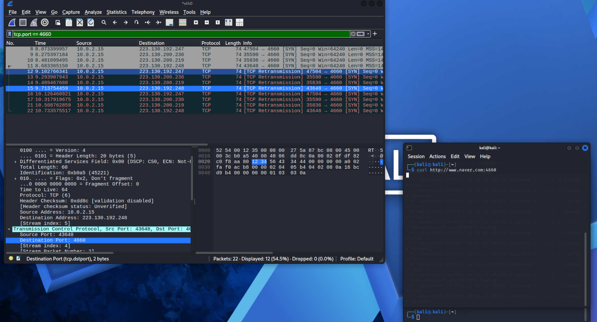
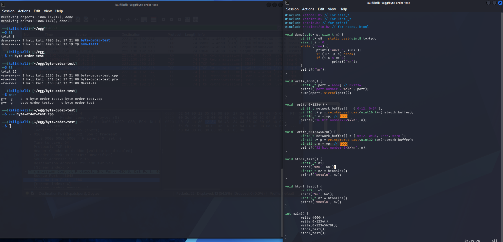
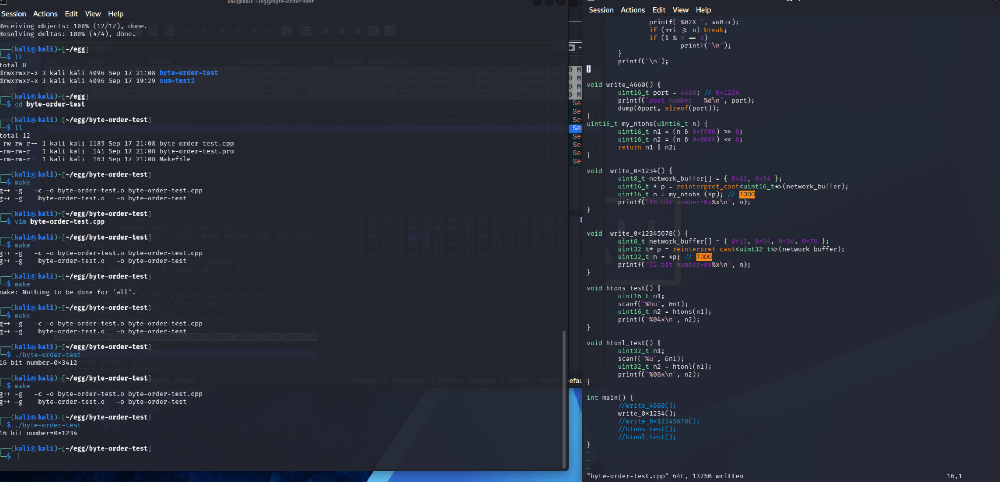

| decimal(unsigned) | hexadecimal | binary | decimal(signed) |
| 0 | 0 | 0000 | 0 |
| 1 | 1 | 0001 | 1 |
| 2 | 2 | 0010 | 2 |
| 3 | 3 | 0011 | 3 |
| 4 | 4 | 0100 | 4 |
| 5 | 5 | 0101 | 5 |
| 6 | 6 | 0110 | 6 |
| 7 | 7 | 0111 | 7 |
| 8 | 8 | 1000 | -8 |
| 9 | 9 | 1001 | -7 |
| 10 | 10 | 1010 | -6 |
| 11 | 11 | 1011 | -5 |
| 12 | 12 | 1100 | -4 |
| 13 | 13 | 1101 | -3 |
| 14 | 14 | 1110 | -2 |
| 15 | 15 | 1111 | -1 |
nibble : byte의 절반의 의미, 4bit , 16가지의 경우의 수를 가짐 (0~15, 0x0~ 0xF)
Byte order
NBO( network byte order) : 네트워크레벨에서 숫자를 표현하는 순서( 무조건 정방향)
HBO( host byte order) : 호스트 레벨에서 숫자를 표현하는 순서 (방향은 LE인지 BE인지에 따라 다름)
LE(little-endian) : HBO != NBO
BE(big-endian) : HBO == NBO
실습
코드 레벨에서 NBO 와 HBO 와의 변환 실습해보기
실습방법
1. kali linux, wireshark 준비
wireshark 패킷 잡을 준비 ->
kali linux prompt에는 curl http://www.naver.com:4660 -> (포트번호 4660을 쓰겠다는 말, 당연히 응답이 오지 않음.)
wireshark 패킷을 잡으면 4660 패킷이 잡힘.

https://gitlab.com/gilgil/byte-order-test.git repository를 clone받아 실습을 진행.
git clone 으로 코드를 받은뒤, vim 을 열어서 실습.


write 0x1234(); 함수를 수정하였다.
uint16_t my_nthos(uint16_t n) 함수를 추가해 3412가 1234가 되도록 해주었다.
n1 : 비트연산을 통해 34만 남기고 뒤에 12날림 -> 쉬프트 연산으로 0034가 되도록함
n2 : 비트연산을 통해 12만 남기고 앞에 34 날림 -> 쉬프트 연산으로 1200이 되도록함
return : n1 + n2를 해줌
-> 원하던 1234로 변환.